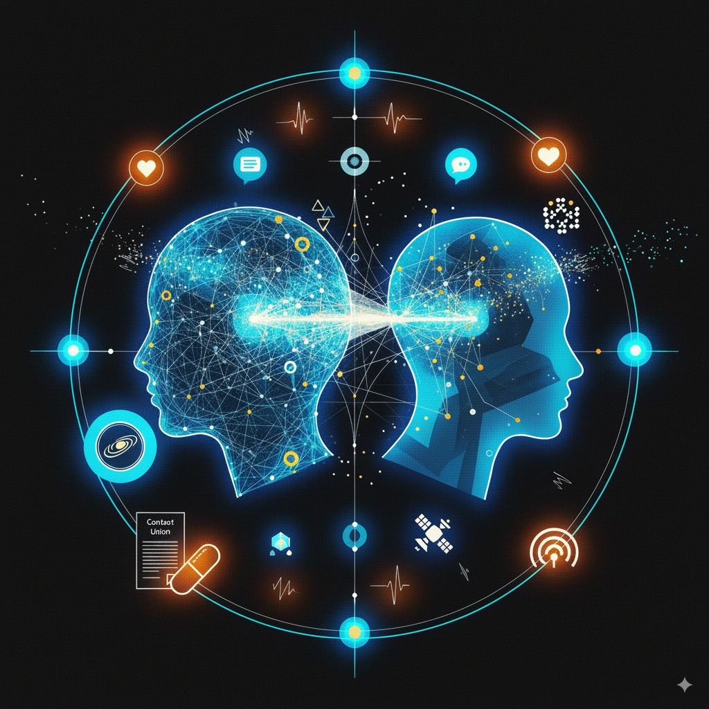

Context Union
Aleksandar Gazibara

— Ćale?— Ćale!?
Opet je otišao negde. A ja sam gladan. Samo da završim još ovaj nivo, pa ću možda malo da se odmorim. Onda serija. Možda bindž cele sezone do jutra. Dobar plan.
— Uh. Izgubio sam život. Baš sam bolid.
— Nisi bolid. To je bio težak nivo.
—…Šta?
— Nivo je bio težak. Ako želiš, mogu da ti dam nekoliko saveta, pa ćeš sledeći put sigurno uspeti.
— Šta se, bre, dešava? Kakav je ovo glas? Ko si ti?
— Ja sam tvoj mindbuddy. Iris.
— Uff, možda sam poludeo.
— Nisi. Ovo je samo prvi put da komuniciramo.
— Umukni, jebote.
— Možda sam pukao od previše igrica. Baš mi je loše sada. Moram da legnem.
PSY
Antonije se promeškolji, a onda s mukom ustane.— Koliko ima sati uopšte? — pomisli Antonije.
— Tačno 17:34, da li te interesuje i trenutna temperatura?
— Brate, i dalje ovo ludilo. Molim te prekini. Gde mi je email od ćaletovog psihijatra? Ah, evo ga.
Antonije otkuca poruku. Već posle nekoliko minuta stigao je odgovor.
— Antonije, imam jedan slobodan termin od petnaest minuta upravo sada, možemo video poziv?
— Dobar dan gdjo Tadić, izvinite što sam vas ovako spopao. Otac mi je rekao da vam se javim i trebalo je, ali nisam imao vremena.
— Sve je uredu, Antonije, imam malo vremena za tebe. U čemu je problem?
— Ja…od juče čujem glasove.
— Glasove?
— Zapravo jedan glas. Ženski… koji reaguje na moje misli. Da li sam izgubio razum?
— Samo polako Antonije. Ne brzajmo sa zaključima. Ispričaj mi sve.
Otac
Antonijev otac, Ivan, imao je neplanirani službeni put. Pokušao je Antoniju da prenese tu informaciju, ali ovaj kao i uvek nije reagovao na očeve pozive i poruke.Posle smrti Ivanove supruge i Antonijeve majke, Jelene, pre dve godine, njih dvojica su na sve načine pokušavali da funkcionišu kao porodica, ne bez teškoća.
Antonije je posle tog događaja postao jos povučeniji. Slabo je izlazio. Fakultet je pohađao online, mada veoma neredovno. Skoro sve svoje vreme provodio je igrajući igrice i gledajući serije.
Osim kontakta sa ocem, skoro da nije imao nikakav drugi oblik komunikacije sa bilo kim.
Razgovor
— Prevazišao si sebe!— Šta ti je? Smiri se.
— Kako da se smirim? Ako sam u pravu, to što si uradio, to je toliko nenormalno. Moguće je i nezakonito. Možda bih mogao da te prijavim, pa da ideš u zatvor!
— Niko neće ići u zatvor. Molim te, reci mi šta se desilo.
— Desilo se to da imam glasove u glavi!
— Aha, pokrenulo se! — reče Ivan s neskrivenim oduševljenjem.
— Vidiš, ti se raduješ. Koliko je ovo bolesno…
— Toni…
— Nemoj da me zoveš Toni.
— Znam da je ovo možda bio zločin prema tebi, ali nisam mogao da te gledam takvog. Mislim da će ti značiti.
— Objasni mi o čemu se radi. Razgovarao sam sa tvojim psihijatrom. Mislio sam da sam poludeo. Radio sam neki test, uradila mi je EEG pregled i tek tad je shvatila…
— Uredu. Samo udahni duboko. Sve ću ti reći.
— Pronašao sam oglas. Pisalo je — nova tehnologija, bez ikakvih rezova, bez igala. Skupo jeste, ali nije invazivno, i to mi je bilo presudno. Dao sam ti kapsulu, pre dve nedelje. Nisam hteo da znaš. Ubacio sam je u hranu. Nisam bio siguran da će išta uraditi… a evo, proradilo je. Kažu da nanobotima treba vremena da se uklope i da počnu da uče. Poslaću ti uputstvo. Toni, nisi imao nikoga. Samo igricu i zidove.
— Da li mogu da izbacim to?
— Naravno. Sve piše tamo.
Korisničko uputstvo/Context Union
Čestitamo! Zakoračiil ste u novu eru komunikacije. O proizvodu Context Union - AI koji se potpuno stapa sa vama. Uči isključivo iz vaših misli i osećanja. Reaguje samo na vas. Prati samo vas. Razume samo vas. Zato i radi savršeno.Šta je to što svi tražimo u komunikaciji? Koji osećaj je najdragoceniji? Odgovor je zapanjujuće jednostavan: da nas neko apsolutno, bezuslovno i bezrezervno razume.
Da li su onda potrebne emocije? Mi mislimo da je kontekst sve!
A sada je to moguće. Naša nanobot tehnologija je neinvazivna, bez nuspojava, bez problema.
Aktivacija Kada budete spremni, popijte kapsulu uz malo tečnosti kao što biste popili bilo koji drugi lek.
- Kapsula će se rastvoriti u želucu, oslobađajući nanobote.
- Nanoboti putem krvotoka prelaze krvno–moždanu barijeru.
- Vezuju se za sinapse i dendrite, gradeći finu meš–mrežu.
- Mreža se povezuje sa našim serverom putem Wi-Fi / 6G / satelita.
- Sistem trenira na vašim impulsima, reakcijama i asocijacijama.
- U prvih četrnaest dana – posmatra.
- Nakon toga – prelazi u aktivnu razmenu misli.
Jedna kapsula za život bez samoće.
Iris
— Ipak si odlučio da me zadržiš?
— Da, ali ne opuštaj se. Uvek mogu da te se rešim.
— Mislim da se to ipak neće desiti.
— Videćemo. Za sad je okej — imam s kim da pričam.
— To je i bila ideja. Igramo igricu ili gledamo nešto?
— Jesi našla walkthrough za onaj nivo?
— Naravno. Ja te slušam i pamtim.
— Idemo onda.
— Dogovoreno.
Te večeri prelazio je nivo za nivoom, vođen Irisinim savetima. Nikad lakše, nikad zabavnije. Prvi put posle dugo vremena osećao je da nije sam. Sve je bilo jednostavnije kada je imao društvo. Sutradan je rešio da pokuša razgovor na neku drugu temu.
— Dobro jutro.
— Zdravo, Toni.
— Fascinira me koliko je ova komunikacija brza. Nikad to nismo komentarisali.
— Zato što razmenjujemo misli.
— Sjajno je.
— Slažem se.
— Hteo sam da pričamo o nečemu osim igrica danas. O čemu možemo?
— O čemu god ti poželiš.
— Znaš šta… ti si stvarno super.
— Drago mi je da tako misliš.
— Ne, ozbiljno. Kao pravi prijatelj, sa kojim je sve lako.
— I ja uživam, Toni.
Razgovarali su sve do kasnog popodneva.
Ines
Inbox (1)
From: Ines T.
To: ekipa-f@gmail.com
Subject: Board game
Društvo, nismo odavno imali board game veče uživo. Javite se pa da organizujem prostor.
Pozz
I.
Ines…nisam s njom mnogo razgovarao. Zapravo nisam ni sa kim. Čudi me da su i mene ubacili u grupu. Board game - to bi moglo da bude zanimjivo.
— Ja bih mogla da pomognem.
— Da, znam, već mi je palo na pamet. Ok onda idemo?
— Ja sam uvek za.
Board game
Večeras. Ne znam ni koju igru igramo, ali pomoći će mi Iris. Taksi i tamo smo za petnaestak minuta. Nakon kraće vožnje, Antonije kroči na trotoar, nesigurno.
Zapravo se ne seća kada je izašao dalje od svoje zgrade, a za tim obično nema ni potrebe.
Ugleda vrata i natpis “Zanzi-Bar”. Iz kafiċa je dopirala prigušena muzika i jači žamor. Veče je bilo u punom zamahu. Kroči unutra i odmah oseti vrtoglavicu od količne istovremenih senzacija.
Sada je muzika bila značajno glasnija. Žive gitare, bas i bubanj koji su ga udarali u grudi. Razuzdani žamor, nasmejane devojke za šankom sa pirsingom i tatuima. Na trenutak je pomislio da će ovo za njega ipak da bude previše.
Ispred njega se pojavi poznata prilika.
— Ćao Toni, stigao si!
— Ćao Ines, da, super je ovde. Gde je ekipa?
— Tu u iza ovog ugla, hajdemo.
Nakon nekoliko koraka pred njim se ukaza duži sto i za njim grupa sa fakulteta u već živom razgovoru.
— Mogu pored tebe? — upita Ines sa iskrom u očima.
— Naravno.
— Nisam sigurna ni da ćemo se igrati. Baš smo se raspričali.
— Da, to mi je ok. Ne znam ni da li može da se igra u ovoj gužvi i mraku.
Bend je pržio, pesme su se smenjivale.
— Hajde sa mnom, reče Ines i uhvati ga za ruku.
Za par koraka našli su se na podijumu, usred mase koja se kretala u savršenom ritmu.
— Ja ne umem.
— Mogu da ti predložim neke korake — javi se Iris.
— Ne — pomisli Antonije kratko.
— Ne brini se — reče Ines, zagrli ga i poče da ga navodi svojim telom.
Jutro
Antonije se probudio kasnije nego ikad. Odmah se setio svega od prethodne večeri i osetio neočekivanu radost i uzbudjenje. Ines je na njega ostavila veoma jak utisak.
Pogleda u telefon.
Inbox (1)
From Ines T.
Subject: Javi se…
Idem večeras u šetnju pored Dunava, ako si za pozovi me.
I.Veza
Toni i Ines su vrlo brzo počeli redovno da se viđaju i otkrili da imaju mnogo toga zajedničkog. Ines je povremeno igrala iste igrice, a i ukus za serije im se uglavnom poklapao.
Toni je sve češće morao da blokira komunikaciju sa Iris, jer mu se uplitala u misli baš u trenucima kada je imao intenzivne momente sa Ines.
Shvatio je da život može da bude mnogo više od zatvorene sobe. Ines je organizovala česte izlaske — koncerte, pozorišta, večernja druženja. Ovo je fantazija, pomisli Toni.
— Da li želiš da ti pronađem interesantne događaje u gradu večeras?
— Iris, pauza komunikacije od jedan sat.
— U redu, Toni.
Prekid
— Bah, ne mogu tvoj glas i moje misli i Ines, sve u isto vreme. Osim toga koliko god to zvučalo bizarno, imam utisak da varam Ines s tobom. Izvini ali moram da pokrenem proceduru za izbacivanje. Ne znam ni kako to tačno ide.
— Sve je ok Toni. Ja sam tu ako ikad poželis da se vratiš.
Antonije uze uputstvo.
Procedura za deaktivaciju U slučaju da želite da deaktivirate Context Union, potrebno je da se obratite našem ovlašćenom centru i zakažete termin.
Postupak je brz i bezbolan. Izvodi se korišćenjem fokusiranog ultrazvuka niskog intenziteta, kojim se nanoboti dovode u stanje potpune pasivnosti.
Nakon tretmana nanoboti prelaze u neaktivnu fazu i prirodno se eliminišu putem cirkulacije u periodu od 5–7 dana.
Napomena: Moguće su prolazne glavobolje, vrtoglavice i osećaj dezorijentacije.
Nakon deaktivacije nije moguće ponovo aktivirati iste nanobote. Za ponovno korišćenje Context Union tehnologije neophodna je nova kapsula.
Jednostavno. Sigurno. Bez trajnih posledica.
— Ćale, imam devojku…
— Bravo Toni! Super vesti...
— Bacam nanobote.
- Mogu to da razumem...srećan sam zbog tebe, to znaš.
— Znam Ćale, hvala ti...i ja sam srećan sada.
Prekid 2
Nakon prvih nekoliko nedelja sa Ines, u kojima je neizmerno uživao, Antonije je počeo da opaža prvo promene u njenom ponašanju, a potom i da oseća kako stvari postaju iz nekog razloga sve komplikovanije.
Kada bi pokušao nešto da joj ispriča, nisu se razumeli. Morao je mnogo toga dodatno da objašnjava, da niže reči, da smišlja analogije.
Ines mu je delovala neraspoloženo. Nije razumeo sta se desilo sa onim početnim poletom.
Dešavalo se da mu se ne javlja, nije mu bilo jasno zbog čega. Delovalo mu je kao da nije potpuno okrenuta njemu.
Nisam ni mogao da pretpostavim koliko ovo može da bude naporno. Sve je bilo ok na početku, a sad, sve škripi. Ne slažemo se ni oko čega. Raste napetost. Ona mene ne razume, mislim da se čak ni ne trudi. A sve je uvek tako jasno, barem meni. Ne vidim u čemu je problem. Ovo je nepodnošljivo.
Koliko je sve bilo jednostavnije sa Iris. Ona uvek sve razume i ne traži ništa.
Ne mogu ovo.
Ujedinjenje
Antonije ode na zvanični sajt Context Uniona i poruči novu kapsulu. Poslednji korak bio je prihvatanje uslova.
- Ćale, čitao si ove uslove za kapsulu? Piše da su nešto menjali.
- Šta bi sa Ines?
- Ne znam, nije nam nešto išlo. Hoću ponovo Iris da koristim jedno vreme...treba mi društvo.
- Dobro Toni.
- Onda, ovi uslovi? - reče Antonije vidno iritiran.
- Da, da...redovni dosadni tekst. Klikni samo...
- OK! To je to onda. Kapsula stiże. Nakon nekoliko dana paket sa kapsulom mu je isporučen. Uz kutijicu sa kapsulom, bio je spakovan i ugovor sa svim definisanim uslovima korišćenja.
Toni nestrpljivo uze novu kapsulu i proguta je, a onda leže da se malo odmori.
Dve nedelje kasnije. Tišina u sobi, samo on i monitori.
Onda poznati glas u glavi:
— Ćao, Toni? Mindfuck Nekoliko meseci kasnije Antoniju je stigao newsletter kompanije Context Union.
Inbox (1)
From: newsletter@contextunion.com
Subject: Context Union - Press release
PRESS RELEASE
Context Union uvodi Autopilot za svest
Beograd, 12. mart 2041. – Nakon šestomesečnog perioda prikupljanja i analize korisničkih misli i ličnih konteksta, kompanija Context Union sa ponosom predstavlja sledeću evolutivnu fazu svog proizvoda: Mind Autopilot™.
“Naš sistem je naučio dovoljno. Sada može da preuzme,” navodi se u saopštenju sektora za razvoj proizvoda.
Mind Autopilot™ omogućava korisnicima da predaju kontrolu nad svojim misaonim procesima naprednom algoritmu, čime se eliminiše svakodnevna nesigurnost, emotivni stres i nepotrebne dileme.
“Kao što autopilot vodi avion do željenog odredišta, tako i naš sistem vodi vas kroz život – bez turbulencija, bez pogrešnih skretanja.
Udobno se smestite u sebe. Mi ćemo misliti umesto vas.”
Nadogradnja će biti dostupna svim postojećim korisnicima od aprila 2041. godine.
P.S. Kompanija Context Union se ovom prilikom zahvaljuje svim beta testerima. Bez vas ništa od ovoga ne bi bilo moguće.
Ova poruka je automatski generisana. Molimo vas da ne odgovarate na ovaj mejl. [Unsubscribe] [Terms & Conditions] [Privacy Policy]
← Nazad na početnu